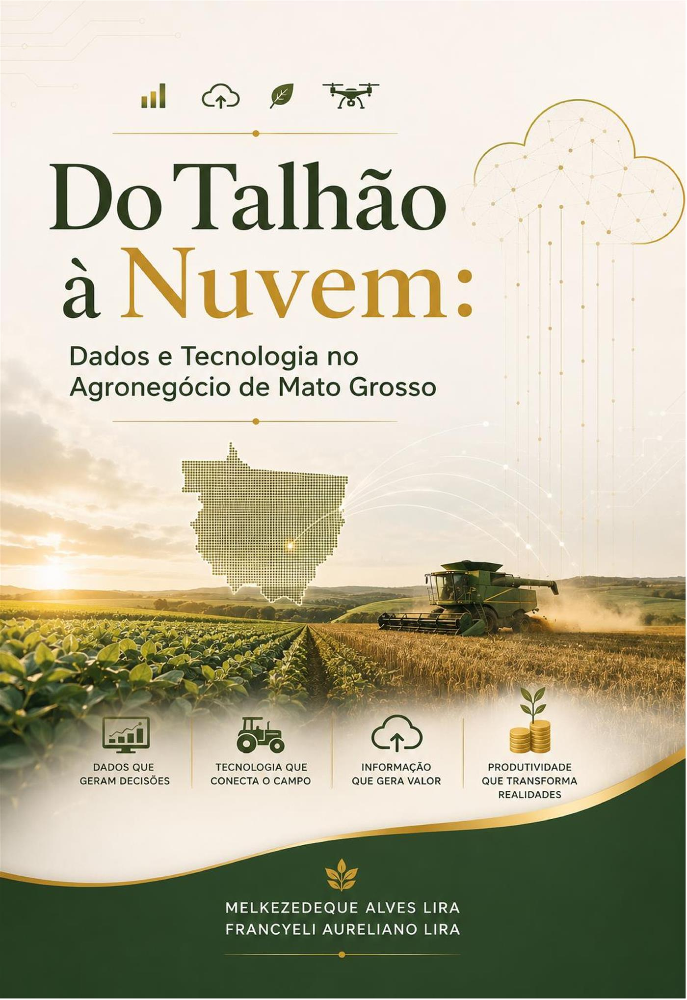

Livro físico
Para estudar, consultar e manter esta referência sobre dados e tecnologia na sua biblioteca.
Comprar livro físico →Pagamento e entrega pela Hotmart
Dados e Tecnologia no Agronegócio de Mato Grosso
Uma ponte entre os dados produzidos no campo e as decisões que precisam fazer sentido para a escala, os riscos e a realidade de Mato Grosso.
O livro reúne fundamentos e experiências práticas para aproximar tecnologia, processo produtivo e pessoas, tendo o agronegócio mato-grossense como referência concreta.
Fundamentos para interpretar variabilidade e sustentar decisões com evidências.
Mapas, camadas e análises espaciais conectados ao planejamento e ao manejo.
Informação organizada para revelar padrões, riscos e oportunidades operacionais.
Aplicações e limites entre o protótipo e o uso real na atividade agrícola.
Sensores, máquinas e conectividade como partes de uma arquitetura útil.
Tecnologia orientada às janelas curtas, margens pressionadas e desafios regionais.
Este livro nasceu de uma pergunta que nos acompanha no campo, na sala de aula e no desenvolvimento de soluções digitais: como transformar o volume crescente de dados agrícolas em decisões que façam sentido para a realidade de Mato Grosso? Entre talhões extensos, janelas operacionais curtas, conectividade irregular e margens pressionadas, aprendemos que tecnologia só gera valor quando conversa com o processo produtivo e com as pessoas que o executam.
Ao longo destas páginas, reunimos fundamentos de estatística, geoprocessamento, visualização, inteligência artificial, Internet das Coisas e gestão de riscos sem perder de vista o lugar de onde falamos. Nossa referência é o agronegócio mato-grossense: sua escala, sua diversidade e seus desafios concretos. Por isso, além dos conceitos, incorporamos experiências de projetos que desenvolvemos ou acompanhamos, sempre que elas ajudam a tornar o tema mais verificável e aplicável.
Escrevemos na primeira pessoa porque não pretendemos observar essa transformação à distância. Somos parte dela. Quando descrevemos uma arquitetura de dados, um mapa de manejo, um painel de telemetria ou um modelo de visão computacional, falamos a partir da prática, inclusive dos limites, ajustes e aprendizados que aparecem entre o protótipo e o uso real. Esperamos que o leitor use este livro como ponte: do talhão à nuvem, e da nuvem de volta ao talhão, na forma de uma decisão melhor.
As duas opções levam diretamente ao checkout seguro da Hotmart.
Para estudar, consultar e manter esta referência sobre dados e tecnologia na sua biblioteca.
Comprar livro físico →Pagamento e entrega pela HotmartPara acessar o conteúdo em formato digital e consultar a obra onde estiver.
Comprar e-book →Pagamento e acesso pela HotmartEscolha sua edição e avance na compreensão prática dos dados e tecnologias do agronegócio de Mato Grosso.